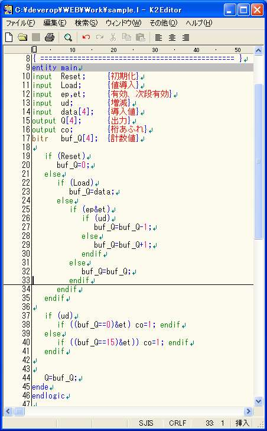
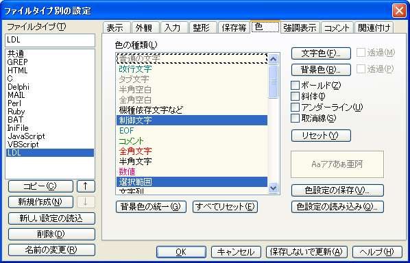
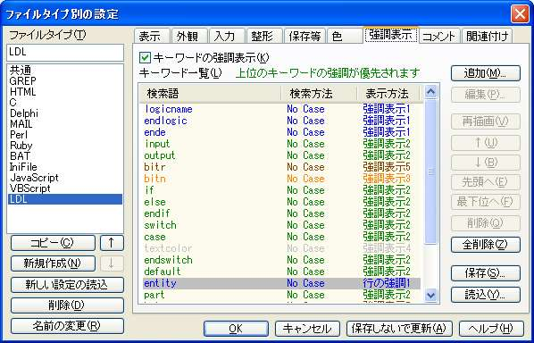
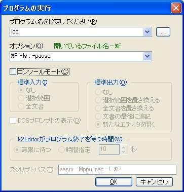

|
| ||||||||||
目次 ●設計環境 ◎エディタ |
設計環境 L
言語では統合された環境は用意していません、主な作業場所はエディタになると思います。 エディタ 下のK2Editorを使うとカラー構文に対応しています。 K2 Software's
Page さんから入手して下さい。  上のカラー構文にするには ldl.cdt をファイルに保存して下の画面から読み込んで下さい。  ldl.hil をファイルに保存して下の画面から読み込んで下さい。  コマンドを発行することもできます。  | |||||||||